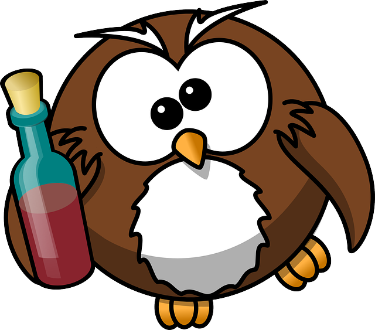

The Vodka Method
Drinking vodka the right way is easy. Here’s how:
Preparation
- Place vodka in the fridge for two, to three hours. Vodka need to chilled, but not frozen.
- Serve some pickled gherkins, dark bread, salami or/and ham, and spring onions.
Drinking
- Serve fifty grams shot.
- Breathe out.
- Drink.
- Breathe out(to remove alcohol vapor).
- Take a lump of dark bread. Smell it.
- Eat bread, salami, green onion.
- Remember: Russian word нажраться(get wasted) pretty much means get wasted from food. So EAT a lot!
- Enjoy the best, tastiest, most delicious shot of vodka you’ve ever had.
Notes
Don't buy cheap vodka. Good vodka: Green Mark(Russia), Nemiroff(Ukraine), Finlandia(Finland)
In the morning best headache solutions are: Alka-Seltzer, mineral water, soup, brine, warm shower and walk. Coffee is a bad idea. BuzzFeed done fairly good post on what you should eat when you drunk https://www.buzzfeed.com/caseygueren/drunk-noms
Questions? Success stories? Photos?
I’m @NotThatNiemand on Twitter. This site was inspired, and is fork of Anna Debenham's Tea Method, and Dan Benjamin's Bacon Method.
Licensed under Creative Commons. The drunk owl image is Public Domain. Fork this page on GitHub.